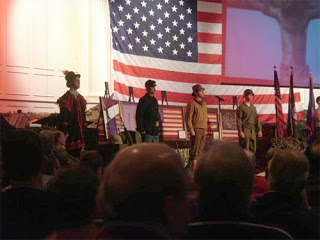
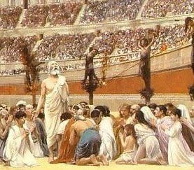

Consecrating a collectivist child sacrifice: Hitler Youth and members of the League of German Girls gather for a Jugendfeier, or "youth ceremony" -- a type of National Socialist confirmation service, held at a German church, circa 1934.
"Never make the mistake of asking what is good for you. Only that is good which is gained through honest means and serves the people.... You must be comrades for your entire life, and must respect every citizen who works, or who as a soldier is ready to give his life for Germany, and you must yourself strive to become such a worker or soldier.... If you do not stand together, but become disunited, if you are not loyal, but disloyal, if you do not work and are cowardly, you will fall into terrible chaos and Germany will collapse. God will have no home in Germany any longer."
Instructions to German youth during the Jungendfeier
"Oh, Lord, stretch forth your mighty hand and bless our Fatherland," intoned the Lutheran minister at the beginning of his sermon. Invoking the name of "God our Father, whose idea government ... was in the first place," he urged his congregants to celebrate their "freedom to submit to the authority of [our] government."
All government officials form an unbroken chain of legitimacy that ultimately leads to God, explained the pastor, and are therefore entitled to unconditional support. It is God's will that all Christians be bound by that chain, and He is grieved whenever His people rebel or even criticize their anointed rulers.
Christian parents have a duty to instruct their children in this doctrine of submission -- unconditional obedience to those God has ordained to exercise authority over us. Children are to be taught to "respect" and obey police, municipal officials, governors, and all other political officials. After all, "how will they possibly respect God himself if they haven't learned to respect somebody right in front of them?"
Such instruction in the tenets of fuhrerprinzip (the Leader Principle) was entirely representative of state-controlled German Protestant churches in the 1930s. Which makes it somewhat remarkable that those words were uttered in a sermon delivered in Milwaukee last March.


Shoving the Prince of Peace aside, putting the Warfare State front and center: Actors pose as American soldiers from various eras during this January 2005 tribute to the military at Porter Memorial Baptist Church in Lexington, Kentucky.
Pastor Mark Jeske, the author of that sermon, delivered it in a hypnotically bland voice of affected piety that acted as the aural equivalent of a dentist's contact anesthetic. If this hadn't been the case, at least some members of his audience would have displayed irrepressible outrage over comments such as these:
"[T]he authority of a government ... that authority structure is built and designed by God Himself.... Even bad governments carry God's authority.... Even bad governments do God's work by keeping some semblance of order in the streets. Even the government of the Soviet Union under Stalin was doing the work of God. Even China, under Mao Tse-Tung, was doing work for God."
Oddly enough -- or perhaps not so oddly, given the freighted politics of the question -- Jeske omitted mention of the "work for God" carried out by Hitler's National Socialist regime, which while not as prolific at killing as the governments of Stalin and Mao, did refer to its attempts to annihilate Jews and others as a providential task.
Stalin's regime did such "godly" work at maintaining order that it exterminated in excess of 35 million human beings, better than half of the total Soviet body count. Mao's frenzies of mass murder account for most of the estimated 75 million (or more) victims of collectivist slaughter in China.


Pace Pastor Jeske, these incomparably sanguinary regimes were doing "God's work" of maintaining order through official terror and concentrated violence.
This makes perfect sense -- if the "god" in question is Molech.

In Death By Government, his indispensable study of democide (the mass murder of human beings by the governments ruling them), Rudolph Rummel refers to the roughly 170 million victims of 20th century political murder (the figure could be as high as 360 million) as citizens of a spiritual land he calls "Golgotha."
Each of these human beings -- irreplaceable individuals made in the likeness of God, endowed by Him with rights, talents, and creative potential, known and loved by people whose lives were blighted by their loss -- was summarily murdered as a sacrifice to some ruling elite's vision of public "order."
Jeske would have us believe that God would extend His approval, albeit in a qualified fashion, to the work of such regimes: "There is something that God fears even more than bad human government. And that's anarchy and chaos."
Leaving aside, for the nonce, the novel notion that the Almighty "fears" anything, it's worth pointing out that anarchy and chaos are by no means the same thing. First of all, anarchy can co-exist quite well with spontaneous order; secondly, Jeske's formulation would have us believe that order is necessarily a product of coercion, rather than consent. Somehow it's appropriate that someone who envisions a "God" tormented by fears of various kinds would depict murderous, tyrannical human governments as holy.
"[T]here is the common and fundamental justification of government that it exists to protect citizens against the anarchic jungle that would otherwise threaten their lives and property," notes Professor Rummel. "Such archaic or sterile views show no appreciation of democide's existence and all its related horrors and suffering. They are inconsistent with a regime that stands astride society like a gang of thieves ... robbing all, raping some, torturing others for fun, murdering those they don't like, and terrorizing the rest into servile obedience."

The government ruling us doesn't -- yet -- kill as promiscuously as the regimes that led the roster of "mega-murderers" compiled by Rummel. But it otherwise matches Rummel's description of the conduct of such a regime. And Jeske is promoting "servile obedience" to such regimes as a Christian duty.
If Jeske is right, the early Christian martyrs were not only fools, but sinners for resisting decrees issued by Roman rulers:
"The early Christians were starting to get the reputation of being bad citizens. That they're weird, they're a cult. They're not like us. Stay away from them, they're really weird. It's one thing to refuse to offer at a heathen altar. But the Christians were refusing to pay taxes and refusing to serve in the armed forces. They were so publicly bad mouthing the Emperor that they were being perceived as being socially dangerous and God wanted nothing to do with that attitude."
Jeske allows that refusing to perform government-mandated acts of Emperor worship was a"good thing" -- what a relief to know that Jeske, in his wisdom, recognizes the validity of the First Commandment! -- but complains that this principled refusal to commit idolatry "morphed into all kinds of other separatist sort of activities as well."
Note carefully the use of the key expressions "socially dangerous" and "separatist." The latter is an epithet frequently deployed against those who seek to shrug off the tyrant's yoke, as well as principled people who mind their own business and prefer their own company. Criticizing such people for displaying "separatist" tendencies makes roughly as much sense as describing rape-aversive women as "unsociable."


Rebels. Malcontents. Separatists. "Socially Dangerous" Persons!And Jeske neglects to mention that early Christians got their separatist notions from the Lord they worshiped, and the teachers He gave them.
Jeske's use of the phrase "socially dangerous" is what called the hairs on the back of my neck to stand at attention. This is because the earliest and most common use of that phrase was made by the Soviet regime under Lenin as a prelude to extermination of sub-populations to whom it was applied.
This idea, first deployed against the Don River Cossacks (who were disarmed, herded into concentration camps, and subjected to starvation and even crude biological warfare), was enshrined as Article 58 of the Soviet Constitution, which permitted the summary imprisonment, psychological and physical torture, and even summary murder of anyone deemed "socially dangerous."
It was the concept of "socially dangerous persons" -- the Soviet equivalent of the Bush Regime's concept of "unlawful enemy combatants" -- that served as "the legal foundation of the [Soviet] terror," notes the panel of historians who published a scholarly study entitled The Black Book of Communism.
This isn't to say, of course, that I think Pastor Jeske is a covert Communist. He seems to be a pretty typical contemporary Protestant pastor, whose approach is rooted more in marketing than ministry and who is more concerned with church growth than doctrinal clarity. I can't see how a doctrinally serious pastor could miss the fact that genuine Christians are of necessity "socially dangerous" people: Preaching and practicing Christian love, and acknowledging the unconditional sovereignty of the Lord Jesus Christ, will always precipitate trouble with the larger world.
Certainly, the "fears" Jeske imputes to God -- that Christians would be seen as weird and socially marginalized -- are the preoccupations of a growth-minded pastor rather than any hang-ups that could be suffered by the Omnipotent Ruler of the Universe.
I suspect that Jeske simply picked up the phrase "socially dangerous," along with trendy ideas regarding the "Doctrine of Submission," as a result of hanging around with people in the community of government-funded "faith-based" organizations. That likely includes at least a few of the clerical Quislings organized into "Clergy Response Teams" that have been prepared to tranquilize troublemakers in their flocks who may not react well if and when undisguised martial law is inflicted upon us.
Blessing the Beast: A Nazi military officer receives a benediction administered by a Bishop from that regime's equivalent of today's "Clergy Response Teams."

As Michael Hampton from the informative and witty website Homeland Stupidity points out, Clergy Response Teams (CRTs) were planted with federal seed money from the "Justice" Department in the mid-1990s, and began to sprout later in the decade. Funding has come through the "Justice" Department's Community Oriented Police Services Value Based Initiative and the Bush Regime's Office of Faith-Based Initiatives.
The product of this process was on display during the post-Katrina military occupation of New Orleans. As "police" -- National Guardsmen freshly returned from patrolling Iraqi cities, Blackwater mercenaries, and militarized law enforcement personnel -- went house-to-house to roust residents and confiscate their firearms, CRTs fanned out to pacify outraged citizens by reciting a statist misapplication of Romans 13: Obey the State in all things, and you'll be blessed.
"The primary thing that we say to anybody [upset over martial law] is, `let's cooperate and get this thing over with and then we'll settle the differences once the crisis is over," explained CRT representative Dr. Durell Tuberville. After all, Tuberville elaborated, Romans 13 dictates that "the government's established by the Lord, you know. And that's what we believe in the Christian faith. That's what's stated in scripture."
For those nominally Christian clergy whose true "god" is the State -- particularly when embodied in the apparatus of military conquest and coercion -- May 1 has become a new High Holy Day, just as that date was sanctified for both Nazis and Communists.

Fifty years ago, President Eisenhower designated May 1 as "Law Day," which was intended to offset the Marxist celebration of Labor Day. Since 1988, the date has also served as an annual National Day of Prayer (which, at the time Harry Truman created the observance in 1952, was originally held on April 17).
In recent years, the National Day of Prayer has degenerated from a day of humble supplication for divine aid and forgiveness into an orgy of militarism. Today's commemoration, for instance, will include military flyovers at various locations, including a Calvary Chapel in Kent, Washington. Marine color guards will be present at events in Bakersfield, California, and Wheeling, West Virginia. Honor guards from other branches of the Armed Forces will appear at events in Wheatfield, New York, and various cities in Arizona.
And in congregations nation-wide, the military will doubtless be depicted as the indispensable priesthood of the divinely anointed government to which we owe unconditional servile obedience.
(My thanks to Doug Newman for bringing Pastor Jeske's repellent homily to my attention, and sending me the link for the video above.)
Obiter dicta
It's been roughly a month since the State of Texas began its attack on the mothers and children of the YFZ ranch near El Dorado. Although the victims have been spared the fate inflicted on the Branch Davidians of Mt. Carmel, this atrocity is, in a very real sense, Waco Revisited.
I'm just curious to know if these guys (the three at the top of that page, and this guy), the self-appointed "leaders" of the "freedom movement," will ever get around to saying something about the mass abduction of American children at gunpoint by the State, or if they're too busy trying to exploit marketable fears of poor brown people, treaties yet to be written, and the supposed threats posed by distant, and largely impotent, governments to condemn the crimes of the Regime ruling us right now.
I'm just asking.
Update: It's nice to know someone's listening....
Although they took pains to bury the FLDS child abduction scandal at the bottom of the story, carefully avoided mentioning that sect in the article synopsis, and let the fearless Andrew Napolitano do most of the talking, the folks mentioned above finally got around to saying something about this outrage ... about a day after I tweaked them for their shameful month-long silence.
I should point out that John Fisher, the author of the piece, is an extremely accomplished writer and academic and a really nice guy (I met him at a youth camp in Wisconsin in August 2005). Dr. Fisher is hardly to blame for the timidity of the people running that outfit.
 On sale now!
On sale now!Dum spiro, pugno!
27 comments:
Will, Jeske is a Wisconsin Synod Lutheran pastor. The Wisconsin Synod is an extremely conservative denom. that preaches and teaches from the old Lutheran Confessions from the Reformation era. They are also very German in background, and we know that Germans have a tendency to obey and respect authority, even abusive authority. But, these teachings are an interpretation of Romans 13: which teaches that all rulers, whther they realize it or not, are under God's authority and judgment.We are to obey them as long as we don't betray Christ. I'm a Lutheran too, but I do not subscribe to Pastor Jeske's view that Mao, Hitler, and Stalin were doing God's work.
Dan
Sir,
I look forward to your columns. I think they are excellently written with thought and precision. You have contributed a great deal to what I believe is a healthy distrust of the government and its deceitfulness. However, I did notice a little sarcasm directed against those who may fear "poor brown people" and people who fear "treaties yet to be written". Yes, some of us do fear multiculturalism supplanting freedom of association. Yes, some of us do fear treaties that appear on the horizon that will destroy our nation's sovereignty in order to benefit the connected and the powerful. Isn't all that part and parcel of being distrustful of government. If I'm way off base, I respectfully ask that I be shown how so.
Chris, thanks for your exceptionally kind comments and very penetrating questions.
I agree that multiculturalism and multi-nationalism are significant threats, or potential threats. Neither of them presents an immediate lethal threat to what remains of our freedom, however.
By way of contrast the Regime ruling us has already torn up the Bill of Rights and due process guarantees going back to Runnymede; it has institutionalized torture; it has built and put into operation the essentials of a militarized police state; and in Texas it is engaged in wholesale child kidnapping.
A couple of years ago I put the matter this way: If a morbidly obese man faces the prospect of a heart attack within a couple of years, but is choking on a piece of steak right now is the smart course of action to lecture the fellow about the need to lay off red meat and get some exercise, or to perform the Heimlich Maneuver right now?
For reasons I've never understood, those at whom I directed the sarcastic comments you mentioned
are the type of people who would natter endlessly about the poor fellow's diet as he chokes to death, and then expect to be commended for their wisdom and courage as orderlies arrive to haul away the corpse.
I have a feeling this Jeske guy would be surprised were he to read God's warning in Samuel to the people not to establish an earthly government. He even warned of the specific evils such governments would visit on them.
Jeske would also be appalled to hear of the men who were thrown in a fiery furnace for refusing to follow a government decree to bow before a hat.
And then the story of Daniel being thrown to the lions because of his refusal to comply with the law and worship God.
In Jeske's world, God would have blessed those rulers instead of saving the men from being burned or Daniel from being eaten by lions.
One pastor who is a shining example of refusing to serve moloch or mammon is pastor Dietrich Bonhoeffer. When he saw the church in Deutschland was being used as a tool of the national socialist regime he took up a pastorate in London. Later he returned to Germany and became active in the resistance. He was executed at Flossenburg April 9, 1945.
Sir,
Thank you for your response which again demonstrates why I enjoy your column. I can't argue with your reasoning and I realize it is a matter of priorities. This nonsense in Texas clearly shows that the threat we face is much more upfront and dangerous than longer term threats to our culture.
Semper Fidelis..
Chris -- thank you, once again! It is deeply rewarding to know that what I'm writing is appreciated.
refuse resist -- Bonhoeffer has long been one of my heroes. While working on a speech I gave about a year ago I read quite a bit of what he had committed to print and was both inspired and chastened by the extent to which he had surrendered himself to God's will, as he had been given wisdom to understand it.
It's interesting that the apostle Paul wrote Romans 13 when he was enjoying the benefits of Roman citizenship. It was the religious leaders among the Jews that were persecuting the Christians when Romans was written. Clearly, in matters of conscience, assuming the conscience is aligned with the word of God, the state has no claim. In civil matters, they do. Romans 13 says civil government is instituted by God for law and order. But what happens when it is the source of lawlessness, disorder, and unpredictability? Parents have authority in their households, and under the laws of God in ancient Israel dishonoring them meant a death sentence for the offending child. Would we then say that wives or children could not flee or defend themselves against an abusive husband or father? No, and we see such not infrequently in the news.
To be clear: the Romans imprisoned Paul because of the agitating of the Jews.
"Bonhoeffer has long been one of my heroes. While working on a speech I gave about a year ago..."
Is that the speech you gave on April 21st of last year called "Paying the Price of Principle"? I found the both the print and the audio from that speech.
501c3 status -- the lure which destroyed the churches.
"...genuine Christians are of necessity socially dangerous. Preaching and practicing Christian love, and acknowledging the sovereignty of Christ will always precipitate trouble with the larger world." (paraphrased)
Truer words were never spoken, Will. I would add to that: singing psalms and observing the sacraments. This entire package is highly seditious, and downright subversive to the City of Man. This is what turns the world upside down. These things are the weapons of spiritual warfare that the City of Man has no counter-weapons for.
Thy kingdom come on earth as it is in heaven. Amen.
Well, after viewing that video, I'm completely disgusted. "All authority is an extension of God's authority".. What the ???
I have serious doubts as to whether the victims of Stalin, Mao and others would agree with such an assertion.
Will, keep up the great work - I look forward to each of you blog entries.
Keep pouring on the heat Will.
Messages and prayers like the ones quoted is what has made me very jaded towards the church and a lack of backbone on the part of the folks in Appleton is what caused me to cancel my JBS membership two years ago.
I am astonished at how much the church's treatment of government has changed since the Reformation.
Queen Mary of Scots: "Think ye that subjects may resist their princes?"
John Knox: "If the princes exceed their bounds, Madam, and act against that for which they should be obeyed, it is no doubt but that they may be resisted, even by power."
Christopher Goodman, a fellow Reformer with Knox and Calvin, didn't exactly advocate blind obedience to government either, in his "How Superior Powers Ought To Be Obeyed By Their Subjects: And Wherein They May Lawfully By God's Word Be Disobeyed And Resisted.".
(You can find it here: www.constitution.org/cmt/goodman/obeyed.htm )
Theodore Beza, a French Reformer, wrote a less fiery but interesting piece, none the less:
De jure magistratuum
(On the Rights of Magistrates)
(www.constitution.org/cmt/beza/magistrates.htm)
Appropriately enough, Rev. Samuel West gave an "Election Sermon" in 1776 on "The Right to Rebel Against Governors".
http://www.historicaldocuments.com/SamuelWestRighttoRebel.htm
If one reads the marginal notes from the Reformers in the 1599 Geneva Bible (from Tolle Lege Press; a CD with searchable .pdf files is included, and works great), one finds that "tyrants" and "tyranny" were frequently and vigorously denounced. Those fellows certainly didn't advocate blind obedience to government.
It's a shame we've forgotten our history.
A Radical Whig in Chattanooga
Hopefully it won't be regarded as crass self-promotion if I offer a different exposition of Romans 13 than is common among compromised churches of this day. Perhaps it will serve as ammunition to refute the Jeskes you may encounter.
"501c3 status -- the lure which destroyed the churches."
Hear hear! By suckling the federal teat they've castrated the Word and proclaimed its neutered shadow as "holy". Whenever and wherever the church has fallen into this "special relationship" the people are indoctrinated into State obedience and then become a religious appendage to said Leviathan.
It behooves the secular powers that be to muzzle any dissenting voices even if it means "bribing" them. If the Church in the States truly believed that Jesus was Lord and that He was in control then they would be carrying out the commission they were tasked with. Any repercussions that honest adherants would suffer would point out the blind and total hypocrisy exercised by both government and complicit church bodies.
It's because compromised churches fret more over their pensions and building programs that any meaningful change will never occur. This drama is like cheap window dressing on a tawdry store peddling trinkets nobody cares to buy.
Jeske is a very conservative, confessional Lutheran. That means, in part, that the thinking and philosophy that culminated in the American Revolution and the Constitution conflicts with his view of Scripture and Chrisitianity, viewed through the prism of Luther and the strictly confessional Lutheran theologians since that time.
Luther had a great fear of social chaos and breakdown if rebellions took place. So, while on one hand, Luther encouraged the German nobility to resist the Holy Roman Emperor,on the other he called for the genocide of the peasants who rebelled in the Peasants rebellion[under the leadership of Thomas Munzer]-and, of course, the nobility happily complied.
In Luther's view, there had to be some order and authority, and abusive/tyrannical auth. was better than chaos. Luther's views became ingrained in the German psyche and led to the Nazi's in the 20th c. Now, there were some,like Bonhoeffer who fought against the Nazis; but they were few and far between.
It seems that Jeske is speaking out of that old German/Lutheran/confessional mentality. Jeske's congregation has a parochial school, and it would be interesting to see his reaction if the state or feds would try to force his school to teach that gay relations were fine. There would be no way he could go along with that. Then you would see Pastor Jeske whistle a different tune.
Dan
"Jeske is a very conservative, confessional Lutheran. That means, in part, that the thinking and philosophy that culminated in the American Revolution and the Constitution conflicts with his view of Scripture and Chrisitianity, viewed through the prism of Luther and the strictly confessional Lutheran theologians since that time.
"...Luther's views became ingrained in the German psyche and led to the Nazi's in the 20th c."
Anonymous, that are great comments and observations, although I would say rather that Lutheran theology allowed someone like Hitler to rise up and not be resisted.
Luther had some definite strengths, but he has some pretty bad flaws in his theology, too. Unfortunately the Lutherans decided to create an idol in Martin Luther, instead of looking at him as person with strengths and flaws.
I don't agree with a whole lot of things that conservative Presbyterian denominations have done, but I think their treatment of John Calvin has been the proper way to view a person who did great deeds. That is, John Calvin did not become an idol for the Presbyterians.
German Lutherans and Catholics who immigrated prior to the War of Southern Independence were overwhelmingly in favor of the Union. The most pro-Union areas of Texas were comprised primarily of German Lutherans. German towns, in Texas at any rate, are notoriously clannish and controlling.
Something got warped in the German character a long time ago so that they became used to never questioning authority. Even if you put the issue of Bismark and Hitler aside, the German General Staff allowed the Wehrmacht to be destroyed rather than going against their Decider. Think, too, of The Simpsons episode in which the old "Do as you are told day," which was established in 1946 by German settlers, was finally replaced with "Do as you feel day.” At this date, it is almost moot since most people in the West think like Germans on the issue of state authority. The French have had a pretty bad problem since their Revolution, but we are talking about Lutheranism here.
Lutheranism has serious problems of by their adherence to pietism and quietism. Pietism leads toward an escapist view of Christianity, which leads towards treating the toleration of abusive power as a virtue. By relying only on prayer for deliverance from tyrants, they put the Lord to a foolish test.
I would say too that the Lutheran doctrine of God and doctrine of salvation are a bit skewered as well. They tend to think that the Almighty is a capricious entity that is waiting to send them to hell over any real and/or imaginary infraction. As a consequence, Lutherans tend to be indecisive. Indecisive pietists do not resist government power—they fear they may go to hell for doing so.
I know one conservative Lutheran who is a libertarian, so not all Lutherans buy into this rubbish, but way too many of them do.
Sorry, but endlessly debating which scriptures are relevant or how they should be interpreted may not shine sufficient light on the proper role of government. It's really a matter of Hobbes vs. Locke and religious leaders would be well advised to acquaint themselves their opposing ideas.
Hobbes was an early advocate of unlimited government as a means of overcoming the evils associated with a "state of nature" - theoretically horrific conditions that would exist in the absence of all an powerful Leviathan. Man's nature was so hopelessly flawed that only an unlimited state would be capable of maintaining some sort of more desirable but unspecified order.
Locke, on the other hand, viewed man as essentially good. Rather than taking man out of the frying pan of a potential jungle and throwing him into the fire of despotism he reasoned that a strictly limited state should exist only to protect individual freedoms from the predation of a few bad apples as well as foreign aggression. Needless to say, the founders of this republic were influenced by the ideas of Locke rather than Hobbes.
Although this nation began on the right path it has clearly gone astray and is becoming more hopelessly lost with each passing day. It is in the nature of things for government to grow an liberty to yield. The chains that once bound Locke's limited state have been broken one by one allowing it to become the thug that it was initially designed to control. The next time you go through airport security and risk being subjected to detention, electric shock, or cavity search you will know that the views of Hobbes have obviously reached full bloom.
Washington correctly understood that government is essentially force. For church leadership, like that in "Reformation Era" Wisconsin, not to distinguish the proper purposes for and limitations upon its use is worse than foolish.
Ironically, both religious freedom and religion's influence are ultimately at greatest risk under the very conditions that they are now sanctioning.
Sorry to be another 'anonymous' but I can't seem to locate my google/blogger id & password & there is never time to post a comment let alone try to justify my cyber-existence.
Although I appreciate 'broken's' expanded view, I'm not sure Roman 13 is really as complicated as some choose to make it.
Since Paul was one of the Apostles of the early Christian church it was his responsibility to oversee how individual congregations conducted themselves according to the righteous principles taught by Jesus Christ. Most of the new Christian converts were 'gentiles', unacquainted with the Hebrew law upon which Christ's doctrine was founded.
In his letter to the Ephesians, Paul said:
Ephesians 4:
11 And he gave some, apostles; and some, prophets; and some, evangelists; and some, pastors and teachers;
12 For the perfecting of the saints, for the work of the ministry, for the edifying of the body of Christ:
13 Till we all come in the unity of the faith, and of the knowledge of the Son of God, unto a perfect man, unto the measure of the stature of the fulness of Christ:
Romans 13 is a continuation of Paul's instruction to the members of the Church as to proper attitude toward one another. I believe that Paul is instructing the gentile converts in the 'sameness' of all - Jew & Gentile - under the laws of God. The rulers he speaks of are literally ordained 'minister(s) of God' in the Christian church - not Roman rulers.
In Ephesians 5:8-14 Paul exhorts the saints to 'have no fellowship with the unfruitful works of darkness, but rather reprove them.'
And how is a government to be limited? They have the power to tax, and the power to draft. Now, tell me what force is supposed to stem their incessant, incremental growth?
Are those in government concerned about a document written to restrain it? Not in the slightest. Are they concerned about "the people" rising up? Hardly. They control the real firepower, and they have the allegiance of the misguided and fools anyway.
The only solution to the dangers of government is not to have one that is funded by taxes.
As Joseph Sobran said in his outstanding article "The Reluctant Anarchist, "it would seem that an institution that can take 200,000,000 lives within a century hardly needs to be "replaced."
Read and ponder that. What entity, besides a tax-based government, has the means (income and conscripts) or the incentive, to slaughter that many people in the span of a single century? Is there any individual, group of individuals, or corporation that could possibly accomplish this without the power to tax and conscript? When you answer this question honestly, you can no longer support tax-based government. Either the chimeric "limited" government, or the real kind.
-Sans Authoritas
In my experience, this pastor's message is hardly the exception in conventional American evangelicalism. It is deeply entrenched in the hearts and minds of pew sitters across denominational lines. It is most difficult to confront and gain any ground. It takes a work of the Spirit.
This was the best article I've ever read. This kind of State Worship has infected, to some degree or other, almost every church in America. I believe it was so easy to do because people no longer read and study the Holy Bible. They've memorized a few comforting verses here and there, and most think the Bible can be reduced to two words: Be Nice. (But why should they read the Bible when God audibly talks to them every day?)
Did you notice the looks on the parishioners faces as Jeske delivered his "sermon?" Every face was completely enraptured. They seemed mesmerized by Jeske's false gospel. Actually he never mentioned the gospel except to "prove" we must worship the State. "What must I do to be saved?"
Be nice and obey your rulers in everything, whether it be good or evil.
This is evil and frightening. I know God hasn't given us the spirit of fear, but sometimes. . . sometimes the fear engulfs me to the point of panic.
I love you, Mr. Grigg.
"And how is a government to be limited? They have the power to tax, and the power to draft. Now, tell me what force is supposed to stem their incessant, incremental growth?....SA"
Once again we are in agreement. This statement and the rest are right in line with my own sad meditations upon said subject. To truly be as free as humanly possible you have to find someplace that simply doesn't have the "resources" to steal or kill you.
I can't say you'll find someplace where the tentacles of the beast don't reach, at least on this planet (Antarctica or Greenland being the least likely), but anywhere that the creature can't easily be enriched is where you ought to be looking.
And if anyone thinks you can "reform" government then you're fooling yourself. That's like someone having terminal cancer and hoping that by switching the presiding physician their cancer will magically disappear. Especially since it was the physicians who brought the cancer upon you.
Steve Scott writes:
"In my experience, this pastor's message is hardly the exception in conventional American evangelicalism. It is deeply entrenched in the hearts and minds of pew sitters across denominational lines. It is most difficult to confront and gain any ground. It takes a work of the Spirit."
Well put and sadly true. Based on what I've seen over the last twenty years (i.e., as long as I've been a Christian), I fully expect most evangelical churches will be filled with snitches and quislings on the day that dissent is outlawed. In the pulpit the love for despotism is such that otherwise bland preachers become impassioned and animated only when parroting the Bush regime's slogans. In the pews one beholds vacant stares as people almost mechanically deny or defend the dishonesty and wickedness of the government (especially its enforcement agencies).
Probably the worst and most zealous persecutors of freedom loving Christians will be their pro-government brethren.
Post a Comment